Conference Proceedings
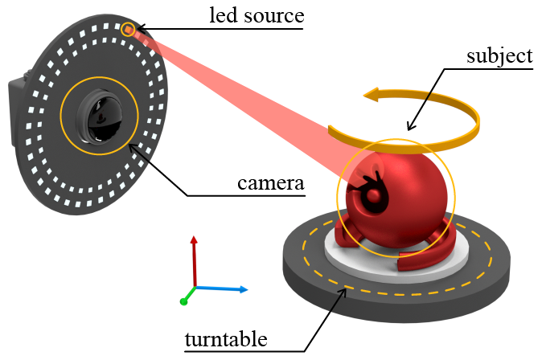
Winter Conference on Computer Vision, IEEE, 2023, Hawaii, USA.
Project Website Topic: 3D Computer Vision, Machine Learning.
[WACV 23] Multi-View Photometric Stereo Revisited
Authors: Berk Kaya, Suryansh Kumar, Carlos Oliveira, Vittorio Ferrari, Luc Van Gool.Winter Conference on Computer Vision, IEEE, 2023, Hawaii, USA.
Project Website Topic: 3D Computer Vision, Machine Learning.
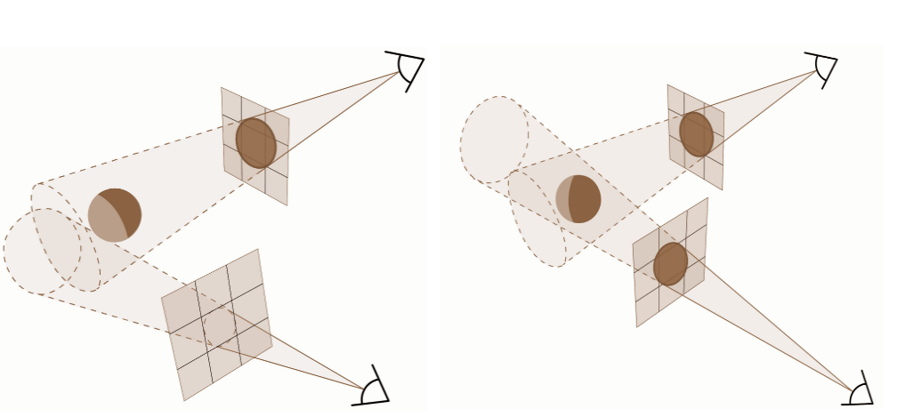
British Machine Vision Conference, 2022, London, UK.
Project Website Topic: 3D Computer Vision, View Synthesis, Neural Rendering.
[BMVC 22] Robustifying the Multi-Scale Representation of Neural Radiance Fields
Authors: Nishant Jain, Suryansh Kumar, Luc Van Gool. (Oral Presentation)British Machine Vision Conference, 2022, London, UK.
Project Website Topic: 3D Computer Vision, View Synthesis, Neural Rendering.
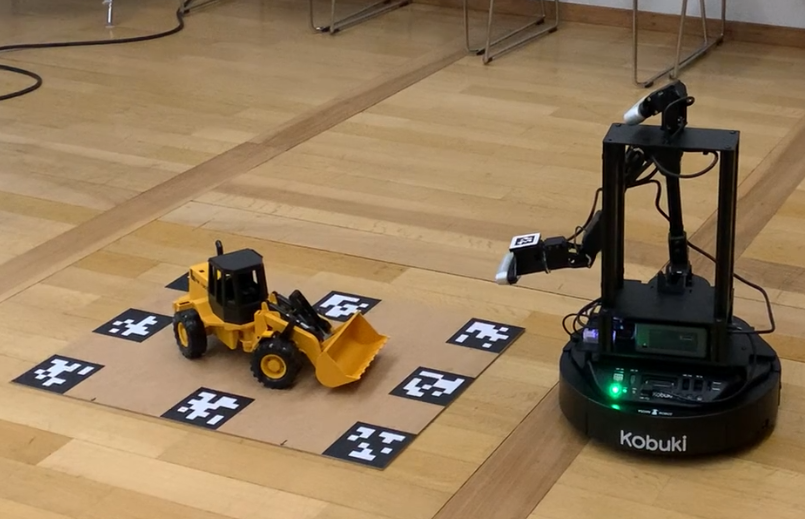
Robotics and Automation Letter, IEEE, 2022.
Project Website Topic: 3D Computer Vision, Robotics, Information Theory.
[RAL 22] Uncertainty Guided Policy for Active Robotic 3D Reconstruction using Neural Radiance Fields
Authors: Soomin Lee, Le Chen, Jiahao Wang, Alexander Liniger, Suryansh Kumar, Fisher Yu.Robotics and Automation Letter, IEEE, 2022.
Project Website Topic: 3D Computer Vision, Robotics, Information Theory.
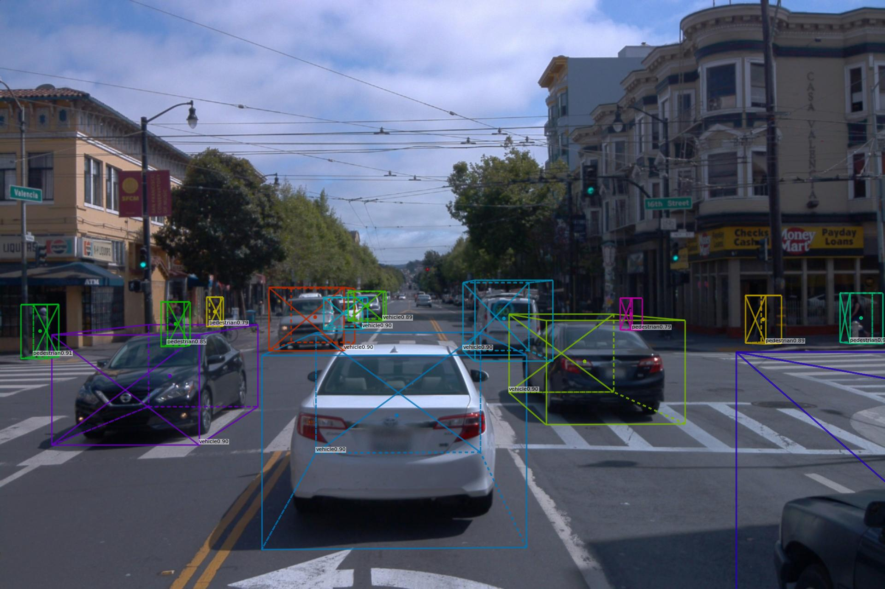
Conference on Robot Learning, 2022, Auckland, New Zealand.
Project Website (Soon) Topic: Tracking, 3D Computer Vision, Machine Learning.
[CoRL 22] CC-3DT: Panoramic 3D Object Tracking via Cross-Camera Fusion
Authors: Yung-Hsu Yang, Tobias Fischer, Suryansh Kumar, Min Sun, Fisher Yu.Conference on Robot Learning, 2022, Auckland, New Zealand.
Project Website (Soon) Topic: Tracking, 3D Computer Vision, Machine Learning.
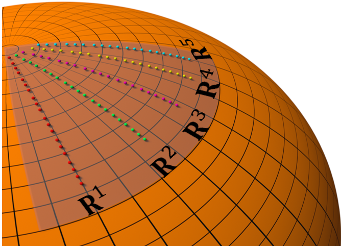
European Conference on Computer Vision, 2022, Tel-Aviv, Israel.
Project Website Topic: 3D Computer Vision, Algebra, Geometry, Compressed Sensing.
[ECCV 22] Organic Priors in Non-Rigid Structure from Motion.
Authors: Suryansh Kumar, Luc Van Gool. (Oral Presentation)European Conference on Computer Vision, 2022, Tel-Aviv, Israel.
Project Website Topic: 3D Computer Vision, Algebra, Geometry, Compressed Sensing.
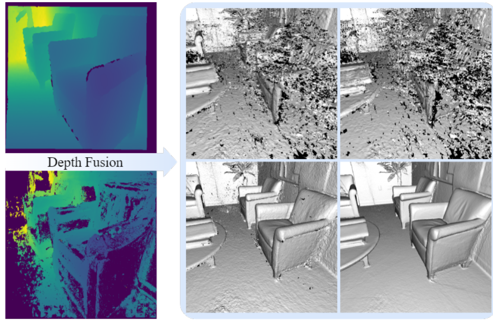
European Conference on Computer Vision, 2022, Tel-Aviv, Israel.
Project Website Topic: 3D Computer Vision, Machine Learning
[ECCV 22] Learning Online Multi-Sensor Depth Fusion
Authors: Erik Sandström, Martin Oswald, Suryansh Kumar, Silvan W, Fisher Yu, Cristian. S, Luc Van Gool.European Conference on Computer Vision, 2022, Tel-Aviv, Israel.
Project Website Topic: 3D Computer Vision, Machine Learning
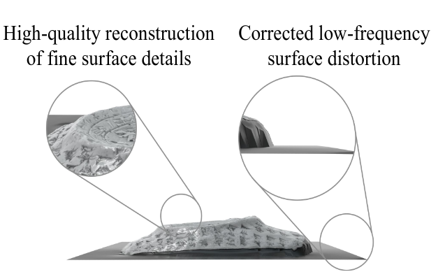
Conference on Computer Vision and Pattern Recognition, IEEE, 2022, New Orleans, USA.
Project Website Topic: 3D Computer Vision, Machine Learning
[CVPR 22] Uncertainty Aware Deep Multi-View Photometric Stereo
Authors: Berk Kaya, Suryansh Kumar, Carlos Oliveira, Vittorio Ferrari, Luc Van Gool.Conference on Computer Vision and Pattern Recognition, IEEE, 2022, New Orleans, USA.
Project Website Topic: 3D Computer Vision, Machine Learning
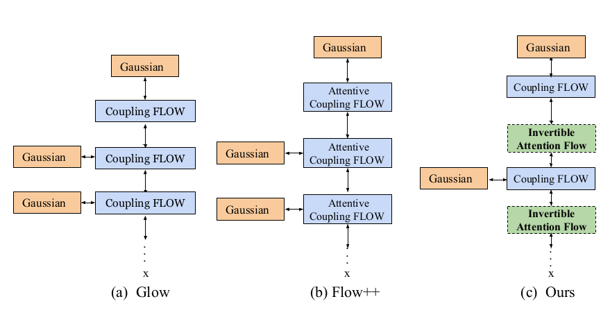
Conference on Computer Vision and Pattern Recognition, IEEE, 2022, New Orleans, USA.
Project Website Topic: Generative Models, Image Processing
[CVPR 22] Generative Flows with Invertible Attentions
Authors: Rhea Sukthanker, Zhiwu Huang, Suryansh Kumar, Radu Timofte, Luc Van Gool.Conference on Computer Vision and Pattern Recognition, IEEE, 2022, New Orleans, USA.
Project Website Topic: Generative Models, Image Processing
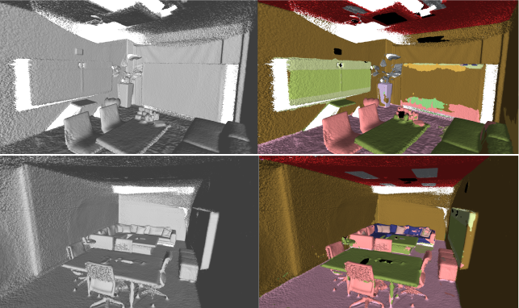
International Conference on Robotics and Automation, IEEE, 2022, Philadelphia, USA.
Project Website Topic: 3D Computer Vision, Machine Learning.
[ICRA 22] A Real-Time Online Learning Framework for Joint 3D Reconstruction and Semantic Seg. of Indoor Scenes
Authors: Davide Menini, Suryansh Kumar, Martin R Oswald, Erik Sandstrom, Cristian Sminchisescu, Luc Van Gool.International Conference on Robotics and Automation, IEEE, 2022, Philadelphia, USA.
Project Website Topic: 3D Computer Vision, Machine Learning.
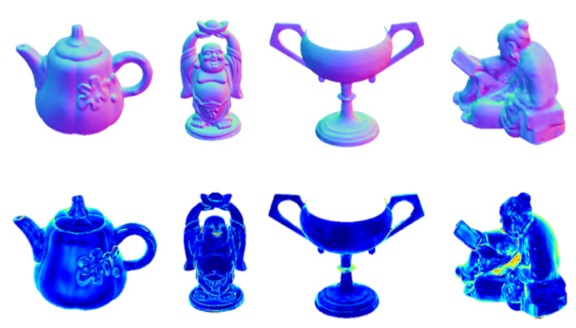
Winter Conference on Applications of Computer Vision, IEEE, 2022, Hawaii, USA.
Project Website Topic: 3D Computer Vision, Machine Learning.
[WACV 22] Neural Architecture Search for Efficient Uncalibrated Deep Photometric Stereo.
Authors: Francesco Sarno, Suryansh Kumar, Berk Kaya, Zhiwu Huang, Vittorio Ferrari, Luc Van Gool.Winter Conference on Applications of Computer Vision, IEEE, 2022, Hawaii, USA.
Project Website Topic: 3D Computer Vision, Machine Learning.
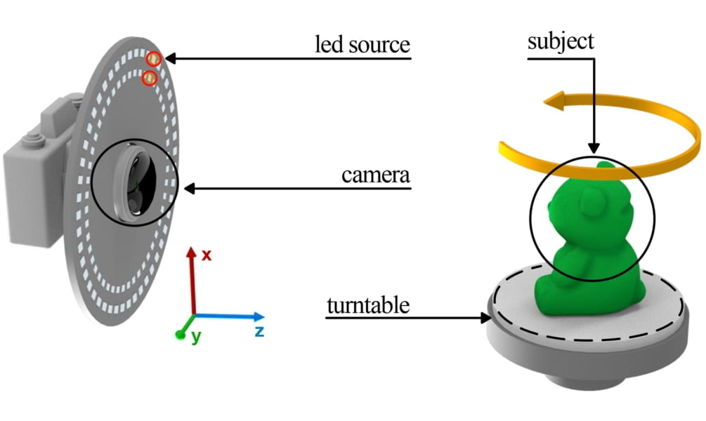
Winter Conference on Applications of Computer Vision, IEEE, 2022, Hawaii, USA.
Project Website Topic: 3D Computer Vision, Machine Learning.
[WACV 22] Neural Radiance Fields Approach to Deep Multi-View Photometric Stereo.
Authors: Berk Kaya, Suryansh Kumar, Francesco Sarno, Vittorio Ferrari, Luc Van Gool.Winter Conference on Applications of Computer Vision, IEEE, 2022, Hawaii, USA.
Project Website Topic: 3D Computer Vision, Machine Learning.
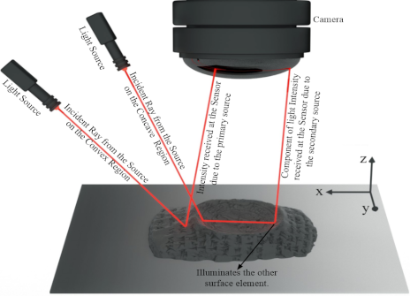
Conference on Computer Vision and Pattern Recognition, IEEE, 2021, Nashville, USA.
Project Website Topic: 3D Computer Vision, Machine Learning
[CVPR 21] Uncalibrated Neural Inverse Rendering for Photometric Stereo of General Surfaces
Authors: Berk Kaya, Suryansh Kumar, Carlos Oliveira, Vittorio Ferrari, Luc Van Gool.Conference on Computer Vision and Pattern Recognition, IEEE, 2021, Nashville, USA.
Project Website Topic: 3D Computer Vision, Machine Learning
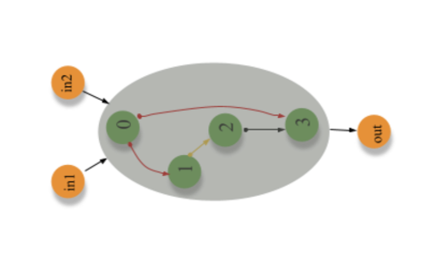
International Joint Conference on Artificial Intelligence, 2021, Montreal, Canada.
Project Website Topic: AutoML, Matrix Manifolds
[IJCAI 21] Neural Architecture Search of SPD Manifold Networks
Authors: Rhea Sukthanker, Zhiwu Huang, Suryansh Kumar, Erik Goron. E, Yan Wu, Luc Van Gool.International Joint Conference on Artificial Intelligence, 2021, Montreal, Canada.
Project Website Topic: AutoML, Matrix Manifolds
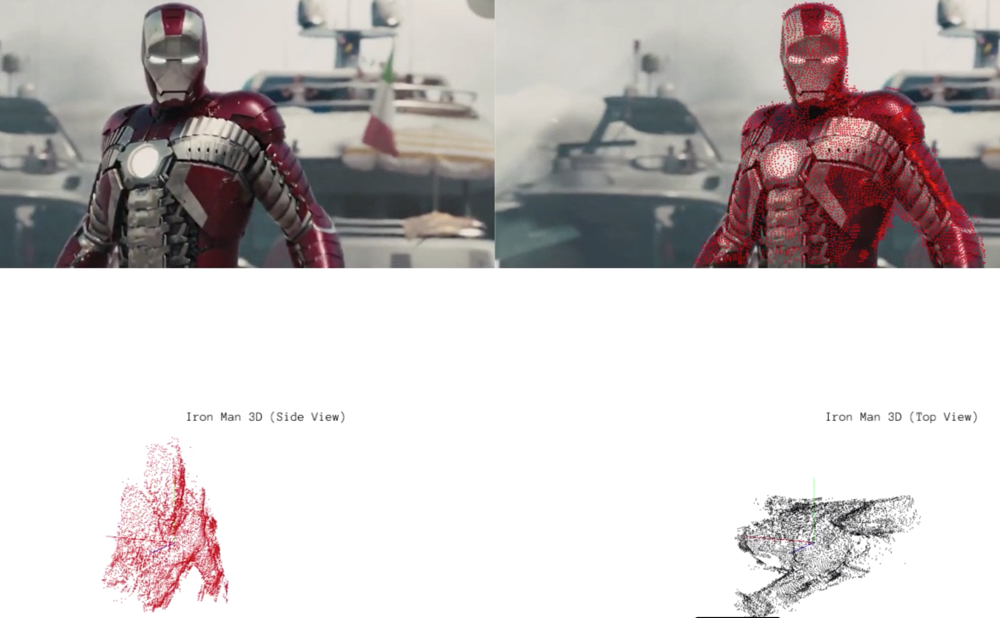
Winter Conference on Applications of Computer Vision, IEEE, 2020, Colorado, USA.
Project Website Topic: 3D Computer Vision, Mathematical Optimization
[WACV 20] Non-rigid Structure from Motion: Prior-Free Factorization Method Revisited
Author: Suryansh Kumar.Winter Conference on Applications of Computer Vision, IEEE, 2020, Colorado, USA.
Project Website Topic: 3D Computer Vision, Mathematical Optimization
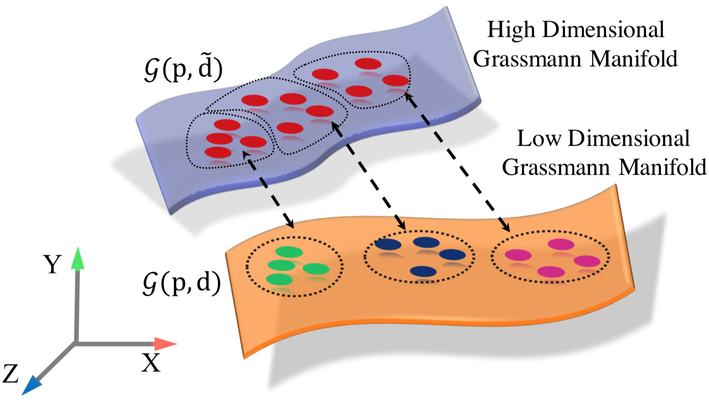
Conference on Computer Vision and Pattern Recognition, IEEE, 2019, CA, USA.
Also invited for a talk at DynaVis 2019. (Oral Presentation)
PDF Supplementary Video Topic: 3D Computer Vision, Matrix Manifolds
[CVPR 19] Jumping Manifolds: Geometry Aware Dense Non-Rigid Structure from Motion
Author: Suryansh Kumar.Conference on Computer Vision and Pattern Recognition, IEEE, 2019, CA, USA.
Also invited for a talk at DynaVis 2019. (Oral Presentation)
PDF Supplementary Video Topic: 3D Computer Vision, Matrix Manifolds
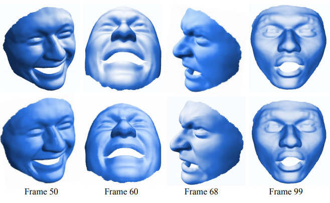
Conference on Computer Vision and Pattern Recognition, IEEE, 2018, Utah, USA.
PDF Supplementary Video Topic: 3D Computer Vision, Matrix Manifolds
[CVPR 18] Scalable Dense Non-Rigid Structure from Motion: A Grassmannian Perspective
Authors: Suryansh Kumar, Anoop Cherian, Yuchao Dai, Hongdong Li.Conference on Computer Vision and Pattern Recognition, IEEE, 2018, Utah, USA.
PDF Supplementary Video Topic: 3D Computer Vision, Matrix Manifolds
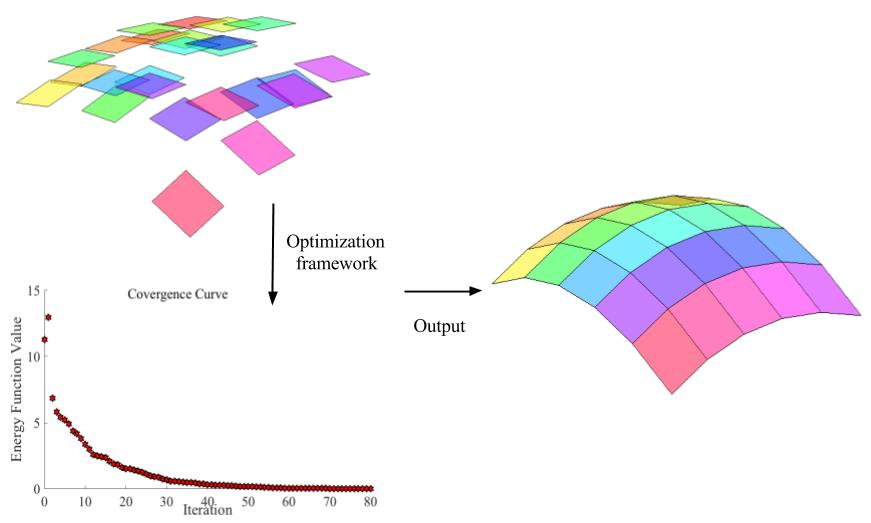
International Conference on Computer Vision, IEEE, 2017, Venice, Italy.
PDF Supplementary Video Topic: 3D Computer Vision, Matrix Manifolds
[ICCV 17] Monocular Dense 3D Reconstruction of a Complex Dynamic Scene from Two Perspective Frames
Authors: Suryansh Kumar, Yuchao Dai, Hongdong Li.International Conference on Computer Vision, IEEE, 2017, Venice, Italy.
PDF Supplementary Video Topic: 3D Computer Vision, Matrix Manifolds
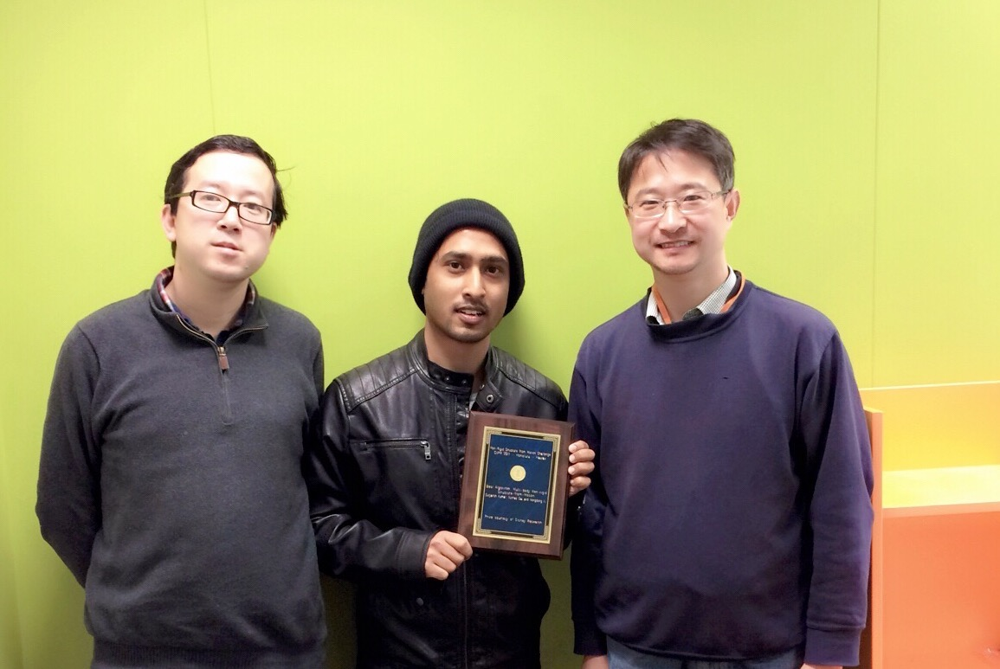
Conference on Computer Vision and Pattern Recognition, 2017, Honolulu, Hawaii, USA.
Sponsored by: Disney Research.
PDF (Presentation)
[CVPR 17] Non-Rigid Structure from Motion Challenge 2017 (Winner)
Winners: Suryansh Kumar, Yuchao Dai, Hongdong Li.Conference on Computer Vision and Pattern Recognition, 2017, Honolulu, Hawaii, USA.
Sponsored by: Disney Research.
PDF (Presentation)
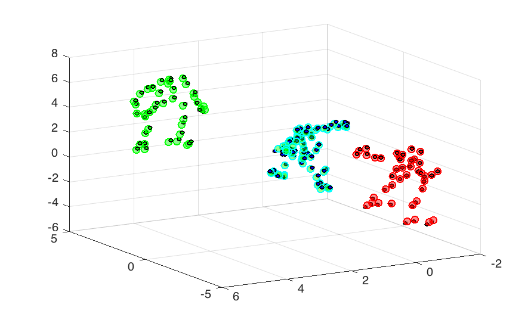
International Conference on 3D Vision, IEEE, 2016, Stanford University, California.
PDF Supplementary Video Topic: 3D Computer Vision, Linear Subspaces
[3DV 16] Multi-body Non-rigid Structure from Motion
Authors: Suryansh Kumar, Yuchao Dai, Hongdong Li.International Conference on 3D Vision, IEEE, 2016, Stanford University, California.
PDF Supplementary Video Topic: 3D Computer Vision, Linear Subspaces
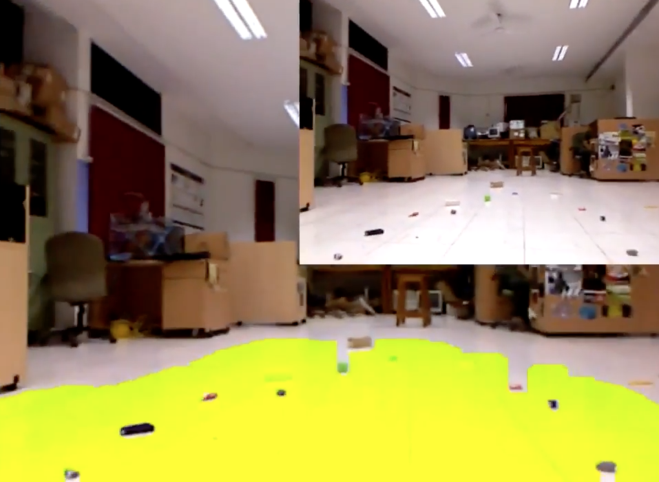
International Conference on Robotics and Automation, IEEE, 2014, Hong Kong, China.
PDF Video Topic: Robotics, Image Processing
[ICRA 14] Markov Random Field based Small Obstacle Discovery over Images
Authors: Suryansh Kumar, Siva Karthik M, K Madhava Krishna.International Conference on Robotics and Automation, IEEE, 2014, Hong Kong, China.
PDF Video Topic: Robotics, Image Processing
Journals and Thesis
[RAL 22] A Real-Time Online Learning Framework for Joint 3D Reconstruction and Semantic Seg. of Indoor Scenes
Authors: Davide Menini, Suryansh Kumar, Martin R Oswald, Erik Sandstrom, Cristian Sminchisescu, Luc Van Gool.Robotics and Automation Letter (RAL), IEEE, 2022.
Project Website Topic: 3D Computer Vision, Machine Learning.
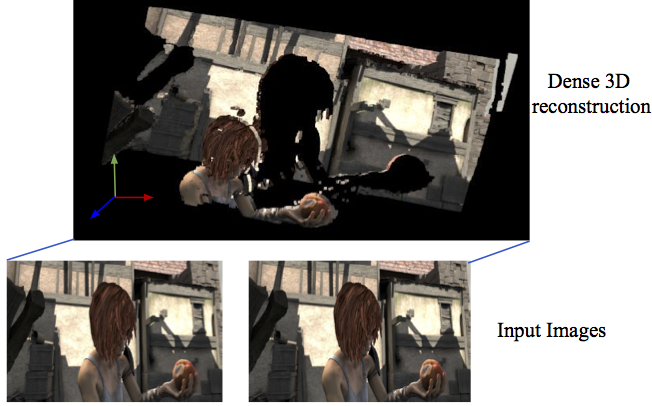
Transactions on Pattern and Machine Intelligence, IEEE, 2021.
PDF Supplementary Video
[T-PAMI 21] Superpixel Soup: Monocular Dense 3D Reconstruction of a Complex Dynamic Scene
Authors: Suryansh Kumar, Yuchao Dai, Hongdong Li.Transactions on Pattern and Machine Intelligence, IEEE, 2021.
PDF Supplementary Video
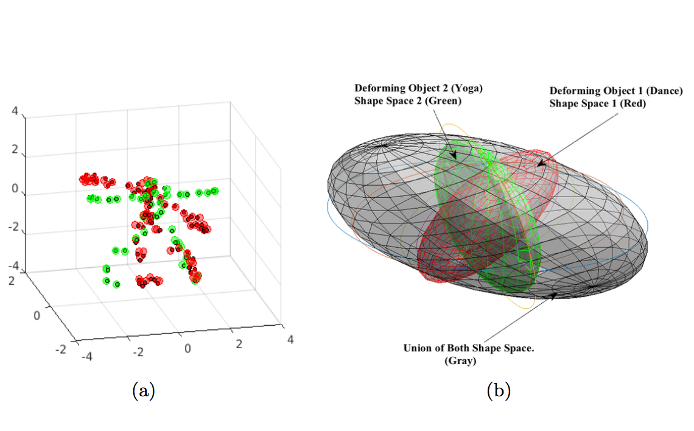
Pattern Recognition Journal, 2017, Elsevier
PDF Supplementary Video
[Pattern Recognition 17] Spatial-Temporal Union of Subspaces for Multi body Non-rigid Structure from Motion
Authors: Suryansh Kumar, Yuchao Dai, Hongdong Li.Pattern Recognition Journal, 2017, Elsevier
PDF Supplementary Video
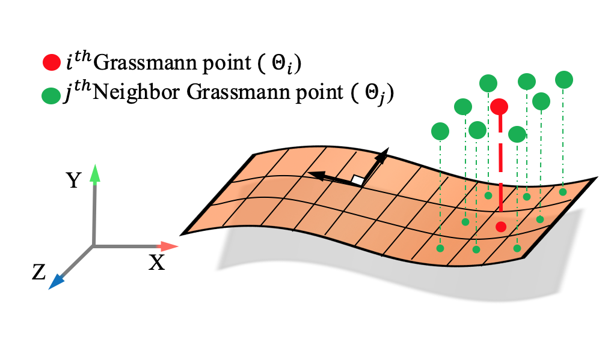
The Australian National University, 2019.
Project Page PDF (Compressed) PDF (Open Access Link) Video
[PhD Thesis 19] Non-rigid Structure from Motion
Author: Suryansh KumarThe Australian National University, 2019.
Project Page PDF (Compressed) PDF (Open Access Link) Video
Workshop and Preprints
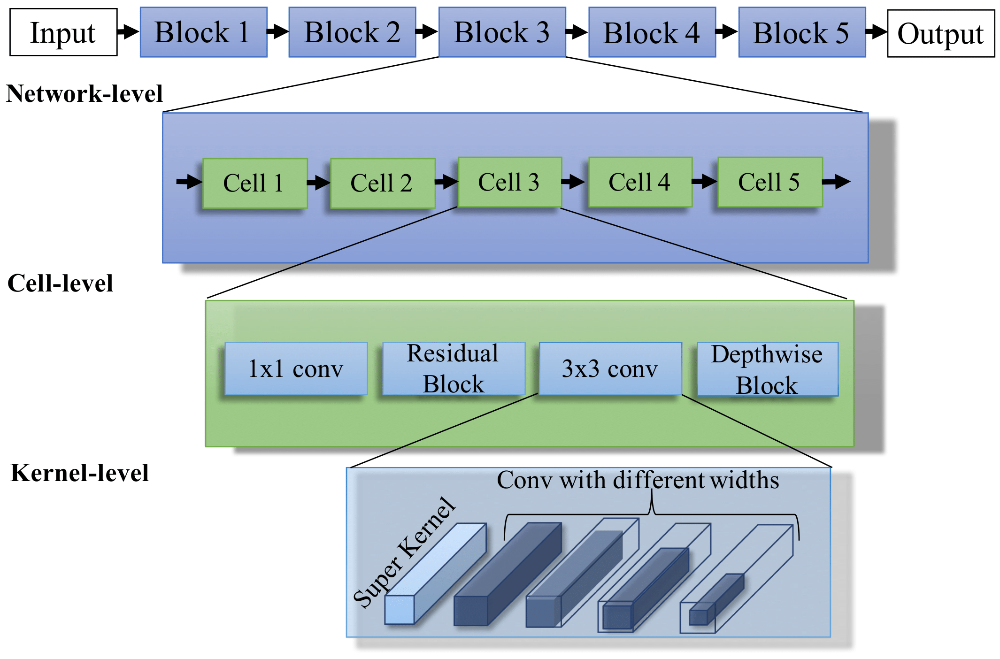
Third Workshop on Neural Architecture Search: 2nd Lightweight NAS Challenge.
Conference on Computer Vision and Pattern Recognition (CVPR), IEEE, 2022, New Orleans, USA.
Project Website Topic: AutoML, Image Processing
Trilevel Neural Architecture Search for Efficient Single Image Super-Resolution
Authors: Yan Wu, Zhiwu Huang, Suryansh Kumar, Rhea Sukthanker, Radu Timofte, Luc Van Gool.Third Workshop on Neural Architecture Search: 2nd Lightweight NAS Challenge.
Conference on Computer Vision and Pattern Recognition (CVPR), IEEE, 2022, New Orleans, USA.
Project Website Topic: AutoML, Image Processing

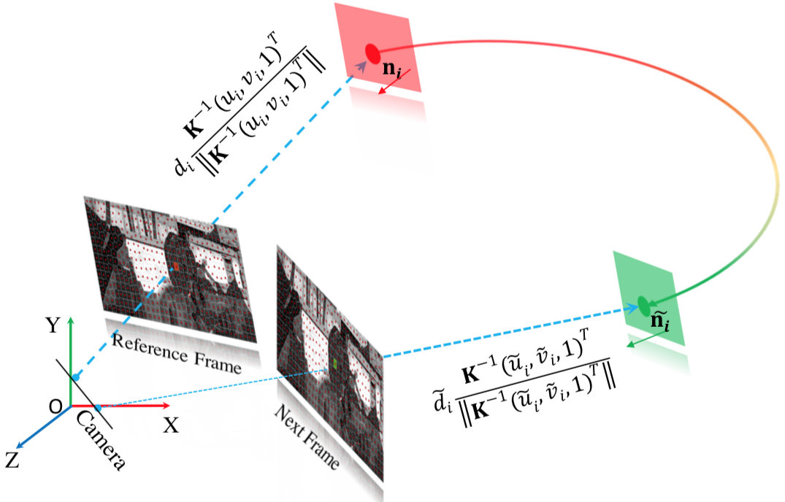
PDF Supplementary Video
Dense Depth Estimation of a Complex Dynamic Scene without Explicit 3D Motion Estimation
Authors: Suryansh Kumar, Ram Srivatsav Ghorakavi, Yuchao Dai, Hongdong Li.PDF Supplementary Video